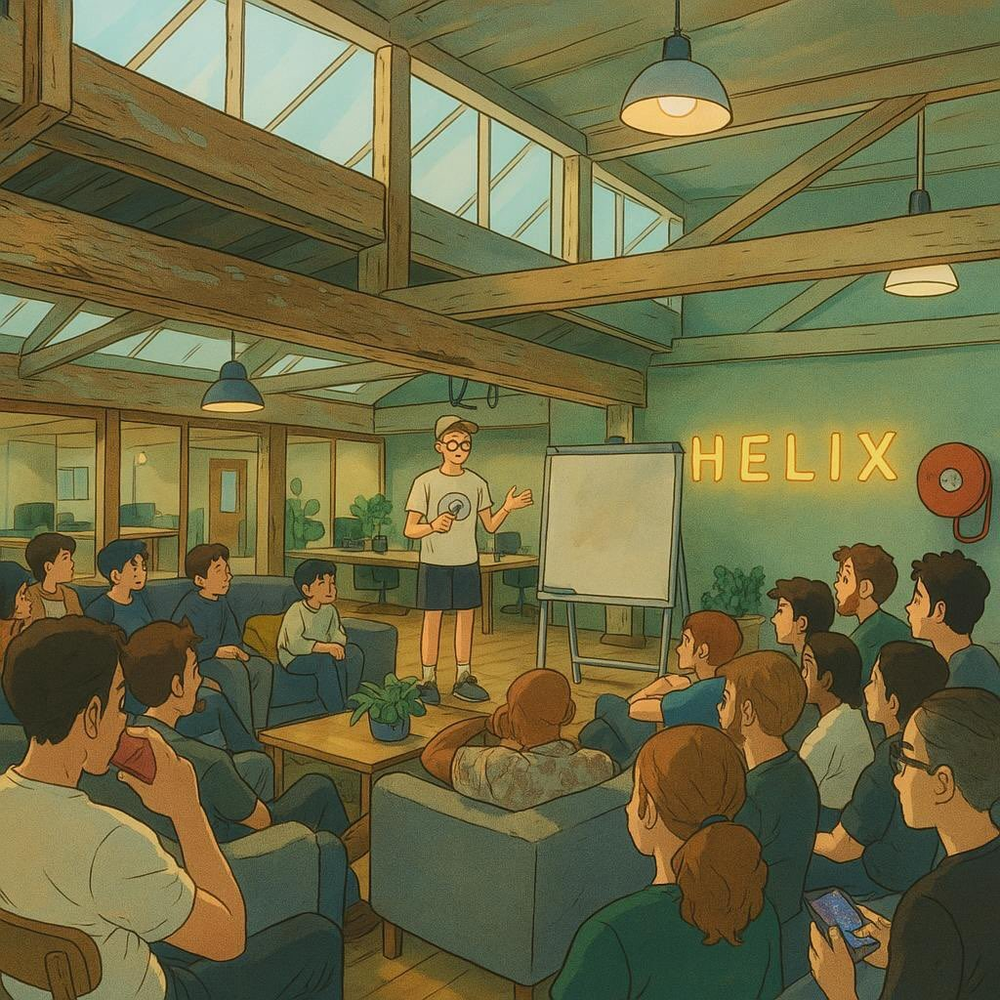
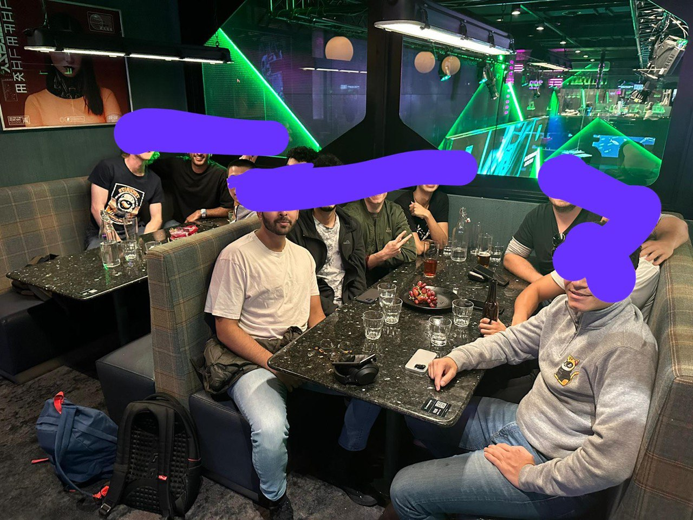
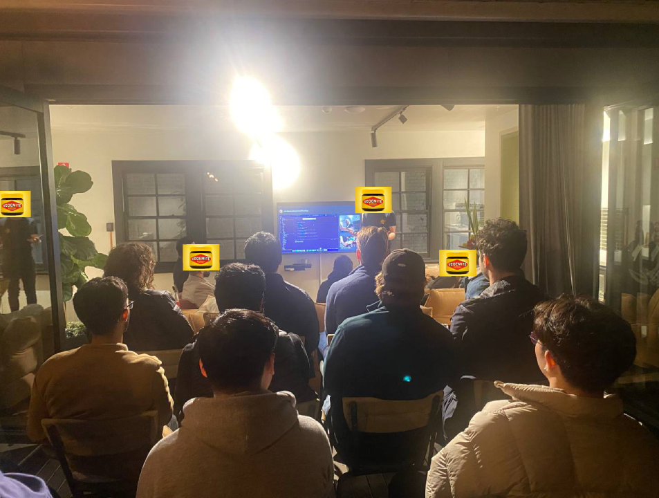

Our story so far
Founded in November 2022. From a group chat to 460+ members and monthly meetups across two cities — steady growth, no hype cycles.
Milestones
Brisbane launches
Inaugural Brisbane meetup brings the Aus Buildooors community to a second city. Featured talks on reg-compliant AUD on/offramp and a Bitcoin mining farm in Tasmania.
Double-city meetup
First simultaneous Sydney + Brisbane meet. Presentations on credit cartels, Moosh, and Starknet updates.
460+ members & featured talks
The community crosses 450 members. Talks from Ethereum Foundation, Pier Two, and Ethstrat. Steady monthly cadence in Sydney with growing Brisbane interest.
Monthly rhythm
Sydney meetups become a regular monthly fixture. Sponsorships from Helix Collective and StarkWare help keep events running. Community grows steadily through word of mouth.
Founded
Aus Buildooors is founded. What started as a group chat becomes IRL with the first Sydney meetup. Monthly meetups every month since.
Who's presented

Ethereum Foundation Researchers
Multi-party cryptography research.
Pier Two
Non-custodial staking infrastructure. $2B+ under stake, Brisbane-based.

Ethstrat
Ethereum treasury strategy and leveraged ETH exposure.

Rise Labs
High-performance Ethereum L2 with sub-5ms latency.

Blacksheep Money
Reg-compliant AUD on/offramp for crypto.

IMF
The International Meme Fund — memecoin collateral and $MONEY.

StarkWare
Starknet ecosystem updates and opportunities.
Geoffrey Huntley
Inventor of ralphing.

Founder of Ren Protocol
Cross-chain liquidity and the story behind Ren.
Casey Wescott
Algorithmic music.
...and many more. Every meetup features talks from community members building cool stuff.
Moments



From the community
good vibes at @ausbuildooors event tonight
— safetyBot (@degenRobot) January 30, 2025
first time i've ever been to an aussie Crypto event as an aussie
the chad @stableshaman - presented fun idea for "Priceline" / some ideas to dunk on ppl / link social history with historical market movements (could turn into... pic.twitter.com/M26XZ0EXex
An amazing double-meet with Sydney+Brisbane @ausbuildooors - @gamiwtf presented @intlmemefund's credit cartel, Josh discussed #Moosh, and yours truly shared exciting #Starknet updates and opportunities. https://t.co/j6rKggugfw
— Casey Wescott (@CaseyWescott) March 28, 2025
thanks to everyone who came to our inaugural Brisbane @ausbuildooors meet!
— Liam Zebedee (@liamzebedee) March 31, 2025
some highlights for me:
- @harrydelltaxlaw's new venture - @BSMoneyOfficial, an reg-compliant AUD on/offramp platform (finally)
- energy grid arb'd bitcoin mining farm in Tasmania pic.twitter.com/g2dvGmvZCP